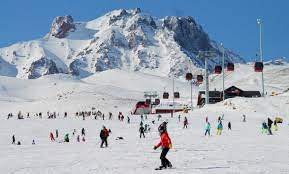
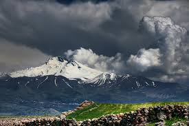

Yapılan araştırmalara göre, bugünkü dağ ve çevresi 20 milyon yıl önce denizle kaplıydı. Zamanla yer kabuğundaki çatlamalar sonucu deniz çevresindeki kara parçaları oluştu ve çevre göl halini aldı.
İsterseniz taksi ile havalimanından kayak merkezine kolaylıkla ulaşım sağlayabilirsiniz. Ayrıca şehir merkezinden (seyyid burhaneddin türbesi önünden ) de sürekli Erciyes Kayak Merkezi'ne develi ilçe minibüsleriyle seferler yapılmaktadır.
Yukarı, 38210 Hacılar/Kayseri, Türkiye
Rakımı yaklaşık 3.916 civarındadır.
Erciyes Dağı ile ilgili resimler
 